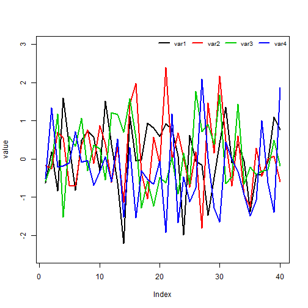
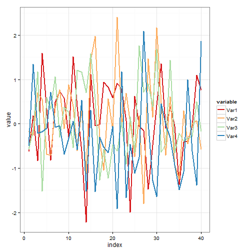
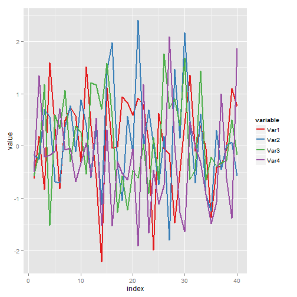
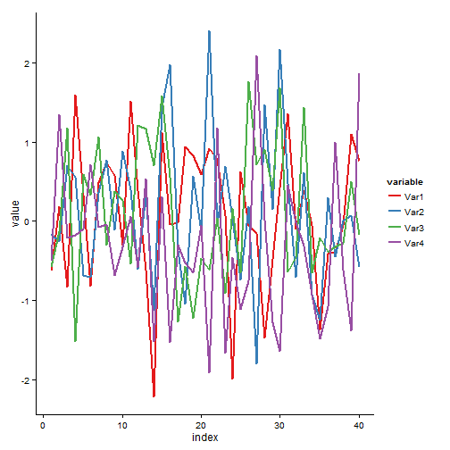

title: "Simulation" author: "EL HAMADI Youssef" date: "Jeudi 17 septembre 2015"
output: slidy_presentation
Simulation des variables aléatoires
Commençons d'abords par la création de notre jeu de données.
set.seed(1)
newdata <- data.frame(Var1= rnorm(40), Var2= rnorm(40), Var3= rnorm(40),
Var4= rnorm(40), index=1:40)Représentation avec plot R-base
La représentation graphique avec la fonction plot de R-base est comme suit:
plot(newdata$Var1, col=1, ylim= c(-2.5, 3), ylab= "value", type="l", lwd=2)
lines(newdata$Var2, col=2, lwd=2)
lines(newdata$Var3, col=3, lwd=2)
lines(newdata$Var4, col=4, lwd=2)
legend("topright", legend = c("var1", "var2", "var3", "var4"),
col= 1:4, lwd=2,ncol=4, cex=0.8, bty="n", bg="white")
Transformation avec reshape2
Si on veut obtenir un graphe d'une qualité supérieure on peut utiliser le package ggplot2. Pour réaliser notre graphe avec ce package nous allons d'abords transformé notre jeu de données à l'aide du package reshape2.
library(reshape2)
Mnewdata <- melt(newdata, id = "index")Représentations avec ggplot2
Enfin, ci- dessous quelques graphiques réalisés avec la fonction ggplot:
library(ggplot2)
ggplot(Mnewdata, aes(index, value, colour=variable)) +
geom_line(size=1) +
scale_color_brewer(palette="Spectral")
Représentations avec ggplot2 (2)
ggplot(Mnewdata, aes(index, value, colour=variable)) +
geom_line(size=1) +
scale_color_brewer(palette="Spectral") + theme_bw()
Représentations avec ggplot2 (3)
ggplot(Mnewdata, aes(index, value, colour=variable)) +
geom_line(size=1) +
scale_color_brewer(palette="Set1")
Représentations avec ggplot2 (4)
ggplot(Mnewdata, aes(index, value, colour=variable)) +
geom_line(size=1) +
scale_color_brewer(palette="Dark2")
Représentations avec ggplot2 (5)
ggplot(Mnewdata, aes(index, value, colour=variable)) +
geom_line(size=1) +
scale_color_brewer(palette="Set1") +
theme_classic()